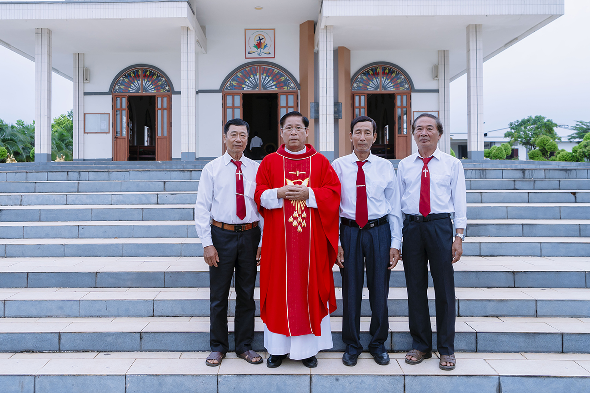

Trong niềm hân hoan tạ ơn Thiên Chúa, cộng đoàn dân Chúa Giáo phận Xuân Lộc nói chung và Giáo xứ Hồng Ân nói riêng đã long trọng hướng về ngày đại lễ cầu nguyện cho các tiến chức. Bầu không khí tại vương cung thánh đường diễn ra vô cùng trang nghiêm và sốt sắng với sự tham dự của đông đảo các linh mục đoàn và bà con giáo dân từ khắp nơi đổ về.
 Hình 1: Đoàn rước tiến chức tiến vào thánh đường trong lời ca nhập lễ.
Hình 1: Đoàn rước tiến chức tiến vào thánh đường trong lời ca nhập lễ.
1. Nghi thức truyền chức trang trọng
Sau bài công bố Tin Mừng, nghi thức truyền chức linh mục chính thức được bắt đầu bằng việc tuyển chọn các ứng viên. Đức Giám mục chủ tế đã thẩm vấn các tiến chức về quyết tâm thực thi nhiệm vụ theo lệnh truyền của Đức Kitô trong sự vâng phục bề trên Giáo hội.
Giây phút cảm động nhất là khi toàn thể cộng đoàn cùng quỳ gối hát Kinh Cầu Các Thánh, trong khi các tiến chức phủ phục trước bàn thờ. Đây là biểu tượng của sự khiêm hạ, phó thác hoàn toàn cuộc đời cho sứ vụ mục tử mà Thiên Chúa trao ban qua Giáo hội.

Hình 2: Đức Giám mục đặt tay chúc lành và ban hồng ân thánh hiến cho các Tân Linh mục.2. Lời nhắn nhủ gửi tới các Tân chức
Mở đầu bài chia sẻ, Đức Cha chủ tế đã ân cần nhắc nhở các Tân mục tử về căn tính của người linh mục là trở thành những người phục vụ đoàn cừu theo gương Chúa Giêsu. Linh mục không phải là một danh vị quyền lực, mà là một lời mời gọi dấn thân, đồng hành, sớt chia với những thăng trầm của đời sống giáo dân, đặc biệt là những hoàn cảnh khó khăn, cơ lỡ.
Thánh lễ khép lại trong niềm vui vỡ òa của các gia đình ông bà cố cùng toàn thể cộng đoàn. Những bó hoa tươi thắm, những nụ cười rạng rỡ và những lời chúc mừng tốt đẹp nhất đã được gửi trao tới các Tân linh mục, mở ra một hành trình gieo hạt giống đức tin đầy hy vọng trên cánh đồng truyền giáo mới.
2. Lời nhắn nhủ gửi tới các Tân chức
Mở đầu bài chia sẻ, Đức Cha chủ tế đã ân cần nhắc nhở các Tân mục tử về căn tính của người linh mục là trở thành những người phục vụ đoàn cừu theo gương Chúa Giêsu. Linh mục không phải là một danh vị quyền lực, mà là một lời mời gọi dấn thân, đồng hành, sớt chia với những thăng trầm của đời sống giáo dân, đặc biệt là những hoàn cảnh khó khăn, cơ lỡ.
Thánh lễ khép lại trong niềm vui vỡ òa của các gia đình ông bà cố cùng toàn thể cộng đoàn. Những bó hoa tươi thắm, những nụ cười rạng rỡ và những lời chúc mừng tốt đẹp nhất đã được gửi trao tới các Tân linh mục, mở ra một hành trình gieo hạt giống đức tin đầy hy vọng trên cánh đồng truyền giáo mới.
⬅ Quay lại danh mục Tin Tức